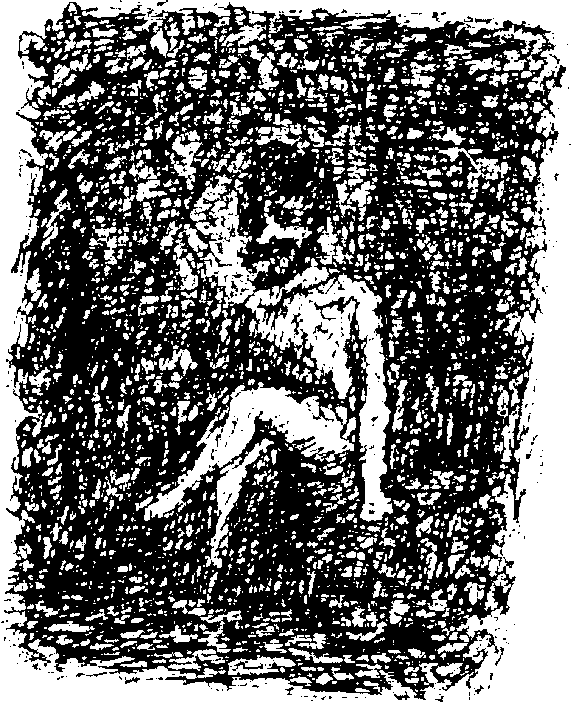

dım edeceğim.” Ses müzik gibi geliyordu. Tatlı bir bezginlik beni etkisi altına almıştı, başımı eğdim, gözlerim kapandı...

Tüyler ürpertici bir kahkaha, cehennemden gelen bir kahkaha beni rüyamdan uyandırdı. Aydınlık odada, Patera’nın durduğu yerde, önümde Amerikalı duruyordu.
Saray’dan nasıl çıktığımı hatırlamıyorum. Çığlıklar atarak koştum. İnsanlar beni durdurmaya çalıştı, ama ellerinden kurtulmuş olmalıyım. Bedenimi kontrol altına aldığımda kendimi bir fayton garajında, yerde kıvrılmış halde buldum. Başaşağı dönmüş bir at arabasının içinde ölü karıncayiyen yavruları gördüm.
Alaycı kahkaha hala kulaklarımda yankılanıyordu, fakat artık üzerimde bir etkisi yoktu. Sinirlerim tamamen laçka olmuştu. Ölüm, ne şekilde olursa olsun, beni uyuşukluğumdan çıkaracak kuvveti kaybetmişti. Düşünmekten aciz bir halde, kendi iktidarsızlığımın farkındalığından güç aldım. Bu çelişkileri anlayamıyor ve çözemiyordum, hem zaten benimle ne alakaları vardı ki? Tüm korkum yok olmuştu. Patera’nın iki yüzlü mizacını bana ifşa eden bu korkunç hayal, şüphe ve endişelerimin oluşturduğu uçurumu ortadan kaldırmıştı.
VII
Rüya Ülkesi’nin içine çekilmiş olduğu aşırı dehşete baktıktan sonra nasıl hayatta kaldığımı yalnızca bu karşılaşmaya dayanarak açıklayabilirim. Hissizliğim, derinlerdeki kalbimi koruyan bir kalkan vazifesi gördü. Rüya Ülkesi’nin ölüm sancılarının gözlerimin önünden geçmesi sanki hayali bir tören alayını izliyormuşum gibi oldu.
Artık odama gitmiyordum ve kafeden de uzak duruyordum. Anton’un tavırlarını da kendi pisliği kadar tiksindirici bulmaya başlamıştım. Müşterilerin sırtlarına şaplak atıp “Beyim ya, şu senin arkadaş da tam bi’ piç di’ mi?”
“Kimden bahsediyorsun?”
“İşte, anlarsın ya, Castringius.” gibi şeyler diyordu.
Rüya Ülkesi sakinleri, birer birer açık alanlara taşınmaya başladı. En iyi insanlar Tomassevic Arazisi’ne ve mezarlığın yanındaki geniş arsalara yayıldı. Oralarda ırmağa dek uzanan bir çeşit çadır kent kurdular. Evet, boğucu sis ve nemli killi toprak uyumak için en iyi mekanı sağlamıyordu, fakat bunların kendilerini engellemesine izin vermediler ve akşamları kamp ateşleri etrafında oldukça neşeli vakit geçirdiler. İnsanlar dans ve sohbet ediyordu. Bazıları balık bile avlıyordu, ama bu balıkların neredeyse çiğ halde yenmesi gerekiyordu, çünkü yakalanır yakalanmaz çürümüş gibi kokmaya başlıyorlardı. Geceleri şehirde sadece ayak takımı kalıyor, etrafı yağmalıyordu. Çok temkinli davranılırsa gündüz vakti sokaklarda dolaşmak mümkündü, ama çöken duvarlar birçok kişiyi yaralamıştı.
Dr. Lampenbogen, terk edilmiş bir parka klinik kurmuştu. Onu gri pardesüsü içinde “çalışırken” gördüm. Bana Mavi Kaz’ın iki katının çöktüğünü, 86 kişinin ölüp, 17 kişinin de yaralandığını söyledi. Bir toplantı sonrasında olmuştu. Mucize eseri Amerikalı yaralanmamıştı, ama hizmetkârının -bunu söylerken kanlı sargılarla kaplı bir bedeni gösterdi- kurtulması mümkün gözükmüyordu. Artık cevherini kaybettiğinden yakınıyordu, hastalarının çoğu solup gidiyordu.
Barakasında işler oldukça kötüye gidiyor gibi gözüküyordu: paslı aletler, çarşaf kıtlığı, her yandaki pislik. Her seferinde itinayla kilitlediği eski bir buz kutusu vardı, içinde soğuk yiyeceklerini ve şişe çekmek için kullandığı bardakları saklıyordu. Birkaç teselli sözcüğü söylemenin uygun olacağını düşündüm. Buz gibi gülümsedi ve “Aslında ben, anlarsın ya, senin gibi bir adam değilim.” dedi. Melitta’sı için özellikle yas tutuyor gibi bir havası yoktu.
Resmi Gazete ile Rüya Aynası kapanmıştı ve Ses’in sahibi Amerikalı’ydı. Sadece özel baskı olarak çıkıyordu ve gündelik olayları yalnızca başlıklardan oluşan bir biçimde veriyordu. Jacques ve çetesi, gazeteyi akşamları sokaklarda kaba “Seeeeeees! Ses’inizi bur 'dan alın!'' bağırışlarıyla satıyorlardı. Giderek daha heyecanlı hikâyeler basmaya başladığı için iyi de satıyordu.
O sıralar ortaya çıkan tuhaf bir hastalık halk arasında panik yaratıyordu. Rüya Ülkeliler birbirlerine rastladıklarında kendilerini karşı konulmaz bir dürtünün etkisi altında buluyorlardı: hepsi aynı istem dışı hareketleri yapmaya başlıyor, elleri ileri doğru uzanıp -anlamsız biçimde geriliyordu. Birkaç dakika sonra geçiyor ve her şey normale dönüyordu.
Açık havada yapılan uzun bir konuşma esnasında dinleyicilerden birisi söylenenleri hızla, bazen en başından bazen ise sonundan itibaren tekrarlamaya başladı. İğnesi takılmış bir gramafonu andırıyordu. Konuşma bozuklukları salgın gibi yayılıyordu. İnsanlar sözcükleri, kavramları, harfleri hatırlayamıyor; kimilerinin dilleri geçici olarak tutuluyordu.
Birçok kişi tanıdıklarından uzaklaşıp doğaya çekildi.
İçtiklerimize dikkat etmeliydik. Alkol zehir etkisi yaratıyordu, ama elbette istisnalar da vardı; kimi zayıf insanlar, kadınlar ve çocuklar litrelerce içseler de zarar görmeyebiliyorlardı.
Bir gün Uzun Cadde’de küçük Giovanni’ye rastladım. Eskici Blumenstich’in dükkanına yerleşmiş olan bir grup geveze maymunla birlikteydi. Çatıdaki tüm kiremitler düşmüştü ve içeri bakınca güvelerin yediği bir mobilya ülkesi görünüyordu. Giovanni bir grup uzun kuyruklu makakın ortasındaydı,. onu kırmızı kemerinden tanıdım. Ona seslendim, fakat beni duymazdan geldi. Türünün özelliklerine tamamen geri dönmüştü ve cilveleşmekle meşguldü.
Elektrik birikmeleri dayanılmazdı. Geceleri şehrin üzerinde parlak gümüş rengi ışıklar yılan gibi gezinir, gökyüzünde" uzun, narin, kuzey ışıklarına benzeyen telkariler oluştururdu. Çölden ve dağlardan keşişler, dervişler ve fakirler gelir, pazar yerinde halka dünyanın sonunun yaklaştığım duyururlardı. Bizleri tövbe etmeye çağırırlardı, fakat kıyamet haberleri bağırılarak bastırılırdı.
Muhtemel son gelmeden önce bir komedi daha yaşanmıştı: Kara Balık. Ses’in özel baskıları, Negro’nun yatağında, şehre bir saat uzaklıkta ortaya çıkmış olan büyük cismi böyle isimlendiriyordu. İnsanlar yeni, bilinmeyen bir hayvanın saldırısına uğramayı beklerken korku her yana yayıldı. Kiremithanede bir gözetleme kulesi kuruldu ve Tomassevic Arazisi’ndeki kampın tehlikede olduğuna inanılan bir kısmı boşaltıldı. Herkes biraraya gelip azametli yaratığın uzandığı yere baktı. Ah, canlan ne kadar tatlıydı! Ben de heyecanlı kalabalığın arasında, eski bir karton teleskoptan bakıyordum. Ne yazık ki puslu mercekler ve sisli ortamdan dolayı pek bir şey gözükmüyordu.
Yanımda duran yaşlı profesör tarafından “Bir Grönland balinası," diye bilgilendirildim, “şimdiye dek yalnızca Kuzey Kutbu’nda görülmüştü."
Tuhaf hayvan hareket etmiyordu ve şehir, yaklaşan tehlike karşısında ne yapacağına karar veremiyordu. Birileri yaratığı uzaktan bombalamayı önerdi, ama böyle bir saldırıya nasıl tepki vereceğini biliyor muyduk? Bu onu sadece kızdırmamıza ve zehrini üzerimize kusup geride kalan şeylerimizi de yok etmesine sebep olabilirdi. En iyisi bekleyip olacakları görmekti, belki de kendi kendine gidecekti.
Genel karmaşanın ortasında birkaç cesur kişi hayran olunası bir cesaret örneği gösterdi. Bu, her şeyin kaos ve düzensizliğe girmesinden önce rastladığım son doğal, sağlıklı içgüdü olmuştu. İki çiftçi, bir asker ve bir avlak bekçisinden oluşan genç adamlar grubu kendilerini halk için feda etmeyi önerdi. Planları bir kayığa binip akıntı yönünde nehirde ilerlemek, hayvana sessizce yaklaşıp onu el bombalarıyla uzaklaştırmaktı. Belki onu öldürmeyi bile başarırlardı. Tehlikeli, cesur olduğu kadar da cüretkâr bir işti.
Soylu teklifleri kabul edildi. Bu genç kurtarıcıları görmek için herkes toplandı. Baştan aşağı donanmış bir rahip dörtlüyü kutsadı ve onlara birer son ahit verdi. Derinden etkilenmiş olan kalabalık nehir kıyısının değirmenden mezarlığa kadar olan kısmında heyecanla birikti.
Dörtlü, savağa gitti. Tamamen çürümemiş, nispeten su almayan son kayığı aldılar ve nehrin akıntısı boyunca yavaşça ilerlediler, yine de iki kişinin sürekli içeri dolan suyu boşaltması gerekiyordu. Kayık giderek küçüldü. Artık nehrin kıvrıldığı noktaya gelmişti ve kısa bir süre sonra canavara ulaşacaktı. Herkes olan biteni görmek için boynunu uzatıyor, nefesler tutuluyordu. Güruh, hafif bir kaşınma dışında tamamen suskundu. Grup, zarar görmemiş bir halde tehlikeli yaratığın hemen yanına demir atmıştı. Herkesi şaşırtan bir şekilde bir süre hiçbir şey olmadı. Sonra uzakta ani bir parıltı gözüktü ve devasa hayvan suya battı.
Bin gırtlaktan yükselen zafer dolu bir “Yaşasın!" nidası kahramanların başarısını kutladı.
“Canavar”ın nehir kıyısındaki söğütlere takılmış bir balon olduğunu duyduğumuzda hepimiz çok şaşırdık.
Rüya Ülkesi’nin çöküşünü Mme Adrienne’in Fransız Mahallesi ’ndeki gözde işletmesinde olanlardan daha iyi yansıtan hiçbir şey yoktu. Saygıdeğer ak sakallı dedelerin öğütleri ile yönlendirilen tedbirli bir sessizlik içinde yıldızı parlamıştı. Şimdiyse creme de la creme, buranın ilginç - ve zorlu - giriş sınavları için muhteşem elbiselerle boy gösteriyordu. Castringius ’un doktorluk payesi verilmesi önerisi ise reddedilmişti. Orası bir fen fakültesi değil bir tarikat, diye sessizce bilgilendirilmişti.
Kumaşın parçalanışı, ünlü yırtık pırtık giysilerin icadına yol açmıştı. Saygıdeğer kadınlar bile, hatta özellikle onlar, bu modayı en uç noktalara taşımıştı. “Menüler” diye adlandırılan fikrin ortaya çıkması onlar sayesinde olmuştu. Onların ne olduğuna dair kabaca bir tarifte bulunacak ve gerisini okuyucunun hayalgücüne bırakacağım.
Kısa kesip “insanları misafir etmekten ve başkalarına misafir olmaktan zevk alıyorlardı’’ diyebilirdim, fakat bu tanım kafanızda tam bir görüntü oluşturmazdı. “Menüler” samimi buluşmalar için basılan davetiyelerdi. Görünüşte masum olan yemekler - örneğin, sandviçler, kalça etleri, kremalı pastalar - aslında aşk sanatının teknik değişkenlerini oluşturuyorlardı ve eminim ki hiçbir okuyucu bu konuda ayrıntıya girmemi istemeyecektir.
Eskiden gittiğim kafe de gizli toplu sekslere sahne olan bir yerdi. En azından bir seferinde içeriye müstehcen resimler, aynalar, küvetler ve şilteler taşındığını görmüştüm. Kafenin sahibine tüm bu taşınanların neye yarayacağını sormuştum.
“Oh, hiçbir şeye," diye cevaplamıştı, yüzünde yapmacık bir tebessümle, “sadece ufak bir montage, hepsi bu.” Aynı akşam önünden geçtiğimde kepenklerin kapalı olduğunu gördüm, böyle bir şey daha önce hiç olmamıştı. Kapıya bir not asılmıştı: “Özel parti: Bu gece”. İçeriden gürültüler yükseliyor, tuhaf konuşmalar ve iğrenç kahkahalar duyuluyordu.
Şehre sığınmış bazı rahipler tapınağın gizemlerini ortaya çıkardı. Hoi polloi’nin onlarla ne yaptığını tahmin ediyorsunuzdur. Bereket organlarına, özel zevk ve güç sembolleri olarak hürmet etmeyip, onları kendilerine yardım edeceklerini umdukları tanrılar olarak gördüler ve onlara hoyratça tapındılar. Ayrıca gizemlerin en büyüğü, kan ayini keşfedildi ve bu, deliliği de beraberinde getirdi. Yıkıcı fiziksel dürtülerin serbest kalmasına sebep olan şeyin bu ayin olması da muhtemeldi. Etraftaki vahşi hayvanlar gözönünde bulundurulduğunda insanların korunma amaçlı olarak bir araya gelmesi doğaldı. Korunma önlemi olarak çadırlarda, tek bir battaniyenin altında uyuyan insanların bahanesi buydu; yaptıklarına “toplu uyuma düzeni” gibi kulağa hoş gelen bir isim takmışlardı.
Hava fırın gibiydi; nehir kenarındaki koylarda ve su birikintilerinde küçük mavi alevler ortaya çıkıyordu. Rüya Ülkesi sürekli bir alacakaranlık içerisindeydi.
Bir gün kampın içinden geçerken etrafın ne kadar sessiz olduğunu fark edip irkildim. Rüya Ülkeliler yerlerinde yatıyor, gözleri yarı açık halde birbirlerine bakıyorlardı. Herkes mahzun ve endişeliydi. Bu insanlar bir şeyin olmasını bekliyordu. Aniden tüm düzlük bir uğultuyla doldu, ses giderek artıyordu ve bastırılmış bir kahkaha duyuldu. Dehşete kapılmıştım. Bir akıl hastalığının ani dışavurumuna benziyordu. Sonra, dingin bir arazide hızla yayılan bir fırtına gibi cinsiyetler birbirine saldırdı.
Merhamet yoktu. Hastalık, gençlik, aile bağları, hiçbiri önemsenmiyordu. Bu, hiçbir insanın görmezden gelemeyeceği asli bir dürtüydü. Şehvetle dışarı uğramış gözlerle herkes yapışacak bir beden arıyordu.
Kendimi kiremithaneye attım ve saklandım. Duvardaki bir delikten dışarıda süregelen korkunç olayları izledim.
Her yandan yükselen inleme ve homurdanmalar, tiz çığlıklara ve arada bir duyulan derin iç çekişlere karışıyordu. Karşımda çıplak insan etinden oluşan, titreyip kabaran bir deniz duruyordu. Ben hiç etkilenmemiş olsam da bu kaba gösterinin anlamsız mekanik doğasına karşı duyarlıydım. Bu denli böceksi bir çirkinliği görmeye dayanamıyordum. Kan rengi bir pus her yanı kaplamıştı. Kamp ateşlerinin parlaklığı cinnet halindeki etlerin üzerinde titreşiyor, bir o grubu bir bu grubu aydınlatıyordu. Yere çömelmiş, sakallı, orta yaşlı bir adamın, bakışlarını hamile bir kadının ikiye ayrılmış kasıkları arasına dikip aklını kaybetmişçesine kendi kendine mırıldanmasını daha dün gibi hatırlıyorum. Çılgın bir ibadet gibiydi.
Aniden yakında bir yerden hem acı hem de sevinç içeren yüksek bir çığlık koptu. Sarışın bir fahişenin dişleriyle bir ayyaşı hadım ettiğini görünce dehşete düştüm. Kendi kanı içinde debelenen adamın cam gibi gözlerini görebiliyordum. Hemen hemen aynı anda bir balta indi; bu sefer kurbanı bir intikamcıydı. Uzaklardan memnuniyet dolu sesler duyulurken mastürbatörler çadırların karanlık köşelerine çekildi: evcil hayvanlarımız da çılgınlığa katılmış, çiftleşiyorlardı.
Ancak bende en derin etkiyi yaratan şey, beyaz ya da kırmızı suratları ne halde olursa olsun tüm zavallı insanların yüzlerindeki, kendi özgür iradeleriyle hareket etmedikleri çok açık olan o yarı uykulu, boş ifadelerdi. Onlar bir kez kurulduktan sonra kendi kendine hareket eden makinelerdi. Zihinleri bambaşka yerlerde olmalıydı.
Üniformasını giymiş olan De Nemi, Jacques’ın çetesinin birkaç üyesiyle birlikte geldi; gelişi, ateşe atılan benzin etkisi yaratmıştı. Beraberlerinde bir piyano sürüklüyorlardı ve de Nemi aynı basmakalıp melodiyi sürekli tekrar ediyordu. Hayvansı bir tonda verilen emirlere itaat eden sarhoş Rüya Ülkeliler sıraya girip çiftleşmeye çalışıyorlardı. Çocuklar birbirleri üzerine çıkıyordu. Nehirden kırmızımtırak bir sis yükseliyor, fakat hayal ürünü bu cehennemi bakışlarımdan saklamaya yetmiyordu. Bir çeşit kana susamışlık başlamıştı! Dev gibi bir adam, boğa gibi soluyarak zıpladı ve uzun bıçağıyla bir başkasının üzerine bindi. Cinayet! Sonra bir tane daha! Adam çıldırmıştı. Tüm aşk oyunları durdu. Ölü gibi beyaz kesilmiş birçok kadın isterik kasılmalar içinde yerde yuvarlandı.
Artık her yandan kana susamış ulumalar yükseliyordu. Hayvanlar bile böyle bağırmazdı! Şiddetli kavgalar koptu ve ağızlarından köpükler saçan adamlar yere indirildi. Yakınlardaki kilerlerin kapıları kırıldı ve iri fıçılar yuvarlanarak kampa getirildi. Herkes sarhoş oldu. Gürültülü bir grup havuza gitti ve şakacı birisi arkalarından kapıyı kilitledi. Saatlerce dehşet verici çığlıklar atarak yardım istediler, ama sarhoş kamp onları duymazdan geldi. Sonra her